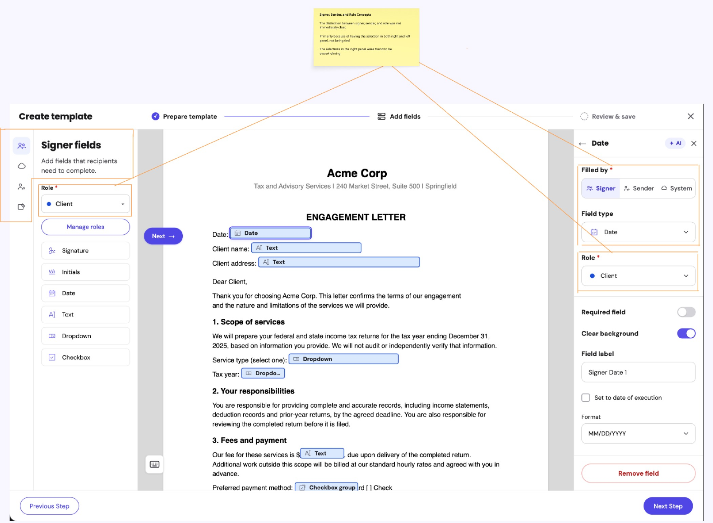
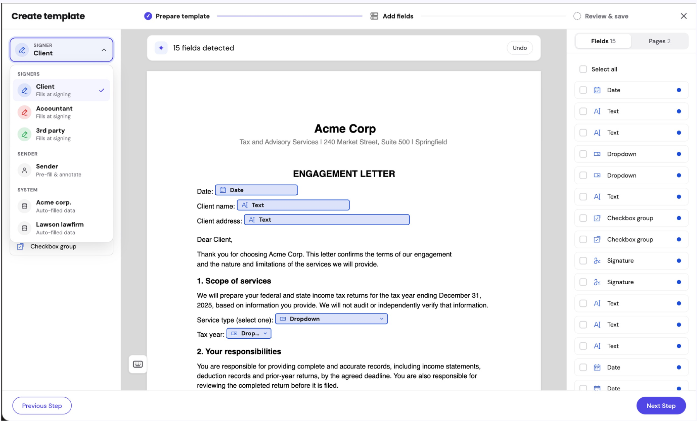

AI can do the most tedious part of building a signature template: finding, placing and sizing every field. Users review and correct, they never start from a blank page. Projected setup time for a 10+ field template drops from 48 minutes to roughly 6 to 10. Beta ships in December 2026.
In ShareFile, currently preparing a signature request or a document template means placing every signature and form field by hand. That gives full flexibility, but it is slow and repetitive, especially for teams sending the same kinds of documents at volume.
Leading e-signature tools already detect likely spots for these fields from a document's structure, keywords and formatting. Without it, ShareFile was behind on parity and losing ground in deals.
Admins build reusable templates and define roles for who signs what. Others just assign people to roles and send.
A simpler flow, but our highest-usage one.
We chose template creation first, on purpose. More on that below.
Manual field placement was eating time across both workflows, and the heavier the document, the worse it got. Past interviews and data also showed signers refilling the same fields repeatedly.
The typical request has 4 fields, but the heavy end is steep: 1 in 10 documents has more than 16 fields, and 1 in 100 has more than 69.
Placing fields is only half the job. Each one still needs a signer and a required setting, one at a time. 32% of templates have 5 or more signer fields, and some have over 100. That’s a lot of repeat clicks, which cancels out the time saved on placement.
The pain was loudest where documents come from external systems and layouts change every time, so templates cannot be reused. Discovery across Salesforce, Podio and Jira kept surfacing the same story.
| CUSTOMER | WHAT WE HEARD | IMPACT |
|---|---|---|
| Crowe BGK | Sends about 1,000 packets a month from Caseware. Layouts vary per client, so templates are unusable for 80 to 90% of them. Asked directly for auto detection of signature locations. | About 83 hours a month of manual field placement |
| First Connect Health | About 40% of documents need manual placement on every send, some with 100+ fields. Named auto detection as a missing capability. | Daily operational overhead |
| Golden Gate Bridge | Auto detection was a top requirement before moving off DocuSign. | BLOCKING CONSOLIDATION |
Assuming a conservative 30 to 40% time reduction at $25 to $30 an hour. Small per account, large across the base, and much larger for high-volume customers like Crowe BGK.
I led design on this end to end, setting the direction and keeping the team honest about what the AI should and should not do.
Shaped the problem with the Principal PM and engineering leads, and pushed back on the original framing.
Set the phasing so our AI offer grew with the model's maturity and users' comfort, not with team excitement.
Set guidance for discoverability, deciding where and when the feature shows up.
Redesigned the field ownership model myself after the first version failed in testing.
Coached a senior designer who was new to AI workflows. She executed the day-to-day design; I reviewed, aligned the team, helped her present, and stepped into prototyping where she got stuck.
Worked with the AI security team and design researcher on how we tested and what we could safely put in front of customers.
The brief arrived with an assumption: auto detection would slot into our template builder the way it does in competitor tools. It would not. Our builder already does more than theirs, with sender fields, signer fields, system fields and annotations, and users already found that complex.
Adding AI on top meant users would spend real time correcting its output. So the real design problem was not detection. It was how far we let the AI go, and how easy we make it to fix.
The team was excited to go deep. My job along with Engineering and PM leads was to slow that down and phase the offering by how mature the model was and how comfortable users were. We landed on two decisions:
Placement is the tedious part people struggle with most, since not everyone has a designer's precision. Configuration stays manual.
Signature requests are our core, highest-usage flow. We prove value in templates first so an unreliable model never hurts the flow customers depend on daily.
Our editor has three areas: field types on the left, the document in the center, field configuration on the right. To keep scope small, we only touched the right panel. Everything new went there: role type, sender, signer, system and annotation fields, plus field configuration. The left panel stayed as it was.
Sender, Signer, System and Role Type all sat in one area of the right panel. The cognitive load was too high.
To change who a field belonged to, she kept looking at the left panel, even after being prompted to look right.
She confused signer and sender fields.
"Clearly there is. I don't know what there is."
The same concepts now appeared in two places, and confusion grew instead of shrinking. Her instinct also told us something useful: people expect to choose who they are working for on the left.

On a multi-signer document, users still need fast, seamless reassignment after fields are placed.
That matches the mental model Courtney showed us. Some competitors put ownership controls in both panels, like our first attempt did. We read that as a problem they likely share and have not fixed yet, which made it an opportunity for us.
Adobe lets admins turn on detection automatically at upload. We chose not to do that until the model is reliable enough to market that way and users are comfortable with it.
I got hands-on and rebuilt the ownership model so each concept lives in exactly one place. The fix went beyond the AI feature, it also cleared up confusion users had lived with for a long time.
| AREA | BEFORE | AFTER |
|---|---|---|
| Left panel | Field types only | An owner dropdown on top ("Signer: Client"), then field types for that owner |
| Owners | Sender, Signer, System and Role Type shown as separate concepts | Grouped into one list: multiple signers, a single sender, and system |
| Annotations | Their own category | Folded into sender fields, since only senders used them |
| System fields | Always shown | Only appear when a client database is linked |
| Right panel | Role type, owners and configuration stacked together | Detected field list with owner color dots, or the selected field's configuration |
| Checkbox groups | Hard to read | Shown visually, with options listed in the group |
| Entry point label | "Auto place fields with AI" | "Auto Detect fields with AI" |
Renaming "place" to "detect" was small but deliberate. It promises less, and leaves the user in charge of the final layout.

After detection, fields need an owner. We do not let the AI guess who signs what. Instead, a simple rule based on our template data:
In our data, Role 1 owns most fields in templates of this size.
Nothing is assigned by default, so the user makes the choice consciously.
Half of our templates have just one signer field, so for most users this default leaves almost nothing to configure. For templates with more than 3 signers, bulk reassign does the heavy lifting.
These are binding documents, so a field sent to the wrong person is a real risk. That was the principle I set for the team.
Because configuration effort grows with every field, bulk actions are core to the design. Users can multi-select fields on the document or in the field list, then assign a role and mark them as required in one step. This keeps the speed of automation without letting AI decide who signs what.
We tested a coded prototype with 3 customers, told up front that it was an early concept. We wanted to know if they saw value, if the output was accurate enough to save time, and how they understood ownership and the sender, signer and system model.
| CUSTOMER | USE CASE | COMPARED US AGAINST |
|---|---|---|
| Courtney HR DIRECTOR, LABOR COMPANY | Onboarding, W-4, I-9, banking and other sensitive documents | An unnamed previous tool |
| Robin LAW FIRM | Wills and probate forms, 2 to 3 signers, some 6-page forms | Vine Sign |
| Mark FRANCHISE SALES + BUSINESS BROKERAGE | Qualification reports, disclosures, engagement letters, up to about 12 recipients | DocuSign |
All three saw the same value: AI removes the tedious first pass of creating, placing and resizing fields.
Wanted to test it internally before rolling it out, which signals validation before adoption, not rejection.
She immediately wanted to try it on her own 6-page forms.
After the ownership redesign, neither Robin nor Mark showed the confusion Courtney hit. Robin reassigned fields between signer and sender without trouble. Color-coded ownership helped most on multi-signer documents.
Mark worried that less detail-oriented people would send wrong assignments on binding documents. Robin accepted the default but wanted to change it easily.
Robin's biggest frustration was lining fields up with each other and the text, "like you can do in PowerPoint."
I gave them a few principles to design by:
They owned execution. I reviewed, aligned the PM and engineering leads, helped them present to stakeholders, and jumped into prototypes where they struggled.
Instead of static Figma mockups, we built real, working prototypes. That made iterations much faster, let customers test something that behaved like actual detection, and cut handoff gaps with engineering. It is also how we turned the post-Courtney changes around in time for the next sessions.
We hosted the prototype HTML on a secure internal platform. That protected our IP and kept testers from treating a concept as a committed feature.
The feature goes to beta in December 2026. Based on the Pendo baseline and what customers told us in testing, we project:
These savings depend on configuration being as fast as placement. That's why we'll also track how often bulk actions are used on templates with 5 or more signer fields.
These are estimates, not measured results, and well above the conservative 30 to 40% used in the business case. The beta will tell us which is closer.
We picked the shortest path, touching only one panel, to keep scope small. It cost us a failed round and created more confusion than it solved. Sometimes the longer route is the right one, and fixing the old foundation is what makes the new feature work.
The most valuable thing I did was decide what the AI should not do yet: no configuration guessing, no AI role assignment, no detect-on-upload. Each "not yet" is tied to model maturity and user comfort, so the product can earn its way to more.